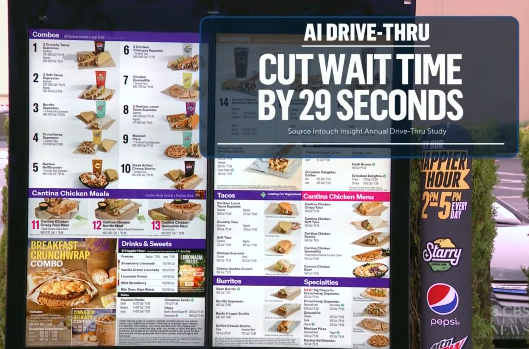

Taco Bell’s AI drive-thru has opinions.

We have automated the ordering of tacos. Not the cooking. Not the delivery. Just the brief moment where a human says “hi, what can I get you?” Taco Bell rolled out AI-powered voice ordering in hundreds of U.S. drive-thrus with the goal of making that interaction faster and more consistent. You pull up, you speak, the system listens, and your order moves along without a human on the other end of the speaker. In theory, it’s a small, efficient upgrade to a very specific part of the day. In practice, it turns out even a 30-second conversation about tacos is harder to automate than it looks.
To be fair, the system has processed millions of orders successfully. The problem is that success is boring, and failure is extremely shareable. Viral clips started circulating showing the AI accepting an order for 18,000 cups of water, or getting stuck repeatedly asking customers if they’d like to add more drinks. None of this is malicious or sinister — it’s just what happens when software designed for clean, predictable input runs into real people with accents, sarcasm, background noise, and a sense of humor. The technology works most of the time, but the moments where it doesn’t are impossible to ignore.
Taco Bell’s apparent takeaway is what every company eventually learns: full automation sounds cool until lunch rush shows up. The new vibe seems to be a hybrid approach where humans step in when things get busy, which is corporate speak for “AI is great until it meets real life.” And honestly, that’s the whole story of automation right now. We keep trying to remove humans from simple interactions, then act surprised when the results feel slightly weird. Not “the future,” exactly. More like “a beta test you experience while hungry.”
Videos:
youtube.com/watch?v=1Z0wZ7k-gwc
youtube.com/shorts/FO5cYZZAFBs